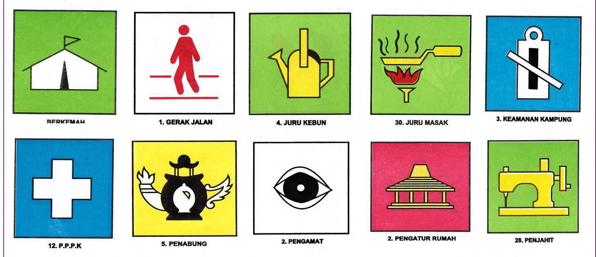
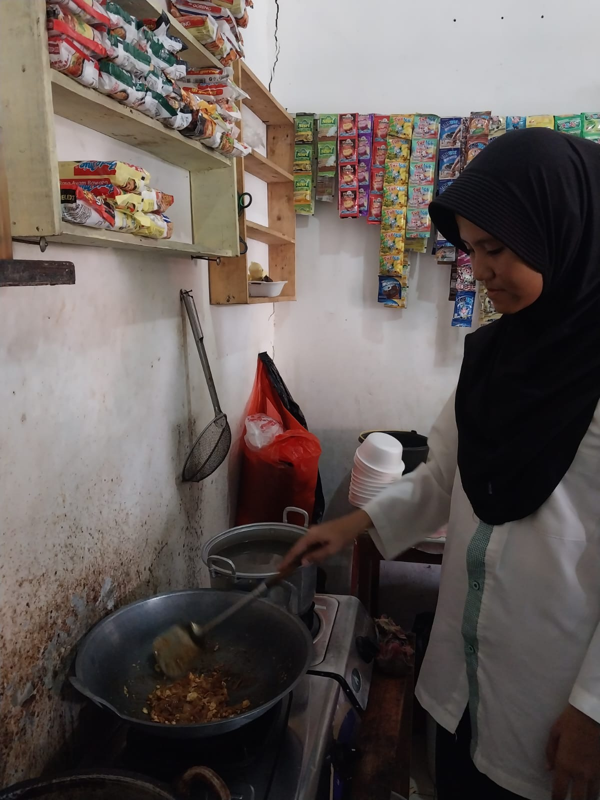

Profile Diri
Primita
Hallo perkenalkan saya Primita siswi SMAN 1 Rengasdengklok, saya lahir di Karawang 19-JUNI-2006. Hobby saya Hiking, membaca, kuliner
Pendidikan Formal
- SDN SAMPALAN 2
- MTSN 3 KARAWANG
- SMAN 1 Rengasdengklok
Pendidikan Non Formal
- Mengikuti kegiatan Pramuka
Organisasi
- Pramuka
- Pramuka penegak laksana
Pencapaian SKU/TKU
Pencapaian Penegak Bantara
Berikut ini adalah Proses pencapaian SKU tingkat Bantara dan Laksana


Kenaikan tingkat penegak laksana


Pencapaian SKK/TKK
Dokumentasi pencapaian bidang-bidang TKK



Bidang agama, mental, moral, spiritual, pembentukan pribadi dan watak
memahami syarat-syarat rukun dan yang membatalkan sholat.
telah membaca al qur'an dari juz 1 sampai dengan juz 10
Bidang patriotisme dan seni budaya

dapat mengatur isi dan menghias suatu ruangan secara sederhana.

ini adalah dokumentasi saya, ketika sedang praktek seni budaya menari ondel-ondel.
Bidang ketangkasan dan kesehatan

Untuk mendapatkan TKK, saya dapat berenang gaya bebas sejauh 30 meter terjun dengan baik dari tepi kolam renang menyelam dalam air.

mengerti cara dan telah melakukan dengan baik, sikap berdiri, berjalan secara cepat atau lambat, start waktu berlomba gerak jalan.
Bidang keterampilan dan teknik pembangunan

dapat memperlihatkan hasil anyaman yang diberi hiasan, sehingga memungkinkan untuk dijual.
dapat menisik kain yang robek memanjang, berlubang, robek menyudut, dan menambai kain koyak.

mengetahui cara menyiapkan makanan menurut peraturan kesehatan.

dapat menyusun dan menyiapkan dengan baik foto-foto dan film negatifnya.
Bidang sosial, perikemansiaan, gotong-royong, ketertiban masyarakat, perdamaian dunia dan lingkngan hidup

dapat memberi penjelasan lalu lintas yang berlaku bagi pengemudi-pengemudi kendaraan bermotor.
mengtahui dan dapat melakukan dengan baik dua pernapasan tiruan.
Keikutsertaan Kegiatan
Kegiatan PAM Lebaran/Karya Bakti Pramuka

Kegiatan SAKA Bakti Husada

Kegiatan Penegak Pandega Siaga Bencana
Legalitas
Telah Menyelesaikan Tingkatan akhir Pramuka Penegak

Telah Menyelesaikan tingkatan TKK pada 5 bidang kecakapan, mulai dari tingkat Purwa, Madya dan ada beberapa di tingkat Utama

Project Produktif

ini adalah dokumentasi saya, ketika sedang melaksanakan projek produktif.
video projek tanaman.
Penguasaan bahasa asing

ini adalah dokumentasi saya, ketika sedang melaksanakan percakapan bahasa inggris.
video bahasa asing.